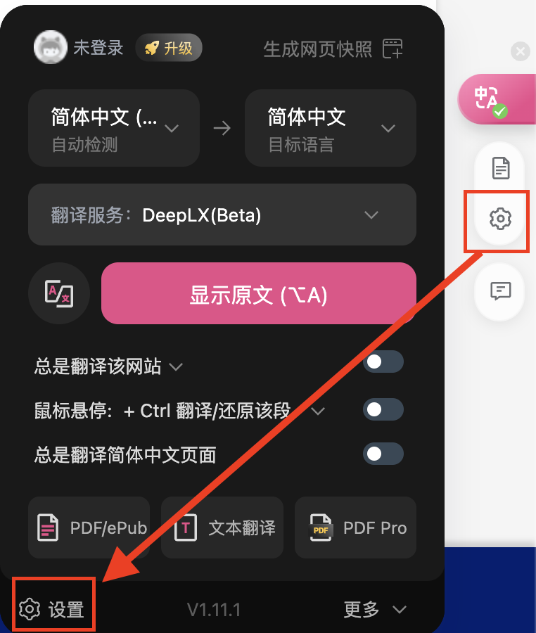
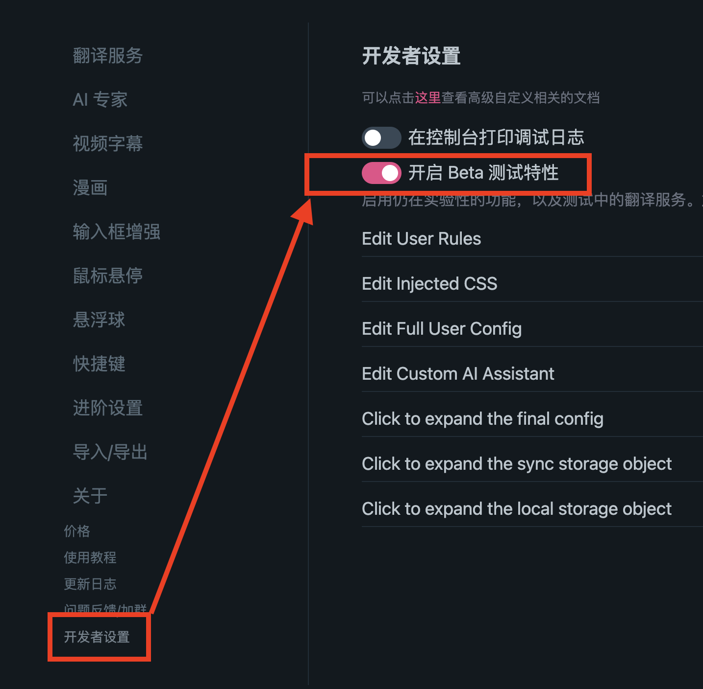
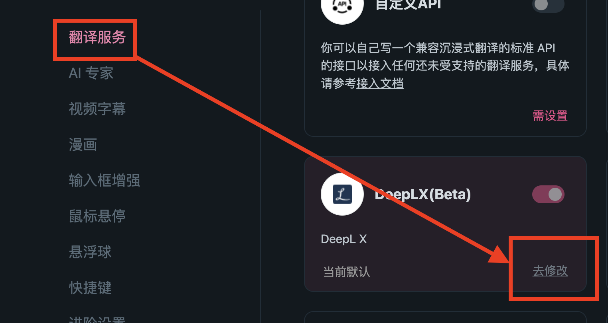
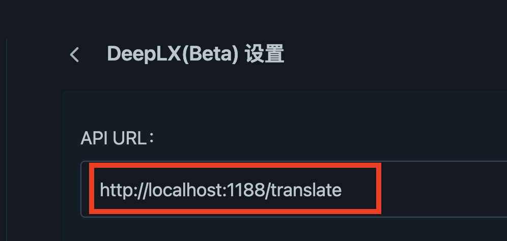
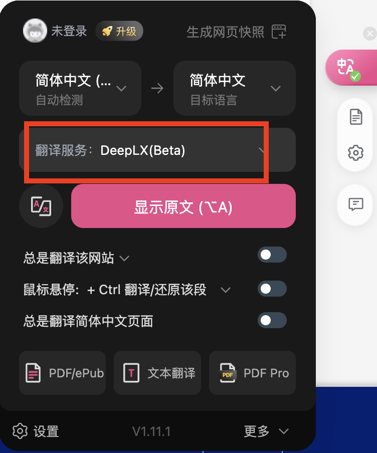

DeepL 的免费版本
文章目录
前言
DeepL 是一个翻译软件，体验下来非常不错，相对准确，并且提供 API 支持。
但是它收费，这一下就把我劝退了，不过今天要来讲一下它的免费替代品。
这个替代品就是DeepLX，它是开源的，可以在本地部署。
安装
DeepLX 安装方式有很多种，我选择使用 Docker Compose 来安装，把它当成一种服务来使用。
docker-compose.yaml 如下
|
|
使用 docker compose up -d 来启动。
验证
安装好之后需要来验证一下是否成功
|
|
结果如下
|
|
集成进沉浸式翻译
在浏览器中有一个沉浸式翻译的插件沉浸式翻译 - 网页翻译插件 | PDF翻译 | 免费 - Chrome 应用商店，可以按段落翻译文本，翻译的结果会在原文的下方，看起来非常方便。
如果你没有用过，推荐你一定要尝试。
接下来讲一下如何在沉浸式翻译插件中配置 DeepLX ，假设你已经安装好了插件
接下来点击插件的设置按钮(那个小齿轮)，然后在弹出的界面再次点击设置 
在弹出的页面找到开发者设置，然后把开启 Beta 测试特性开关打开

接着回到翻译服务，找到 =DeepLX(Beta)，点击去修改，记得后面改好后这里的开关要打开 
点击修改后，把你的部署的地址填入到 API URL 中

这样配置就好了，最后最重要的是要启用这个服务 
下次你在使用翻译的时候就是用的 DeepLX 了，再也不怕使用必应翻译有时候网络不好了。